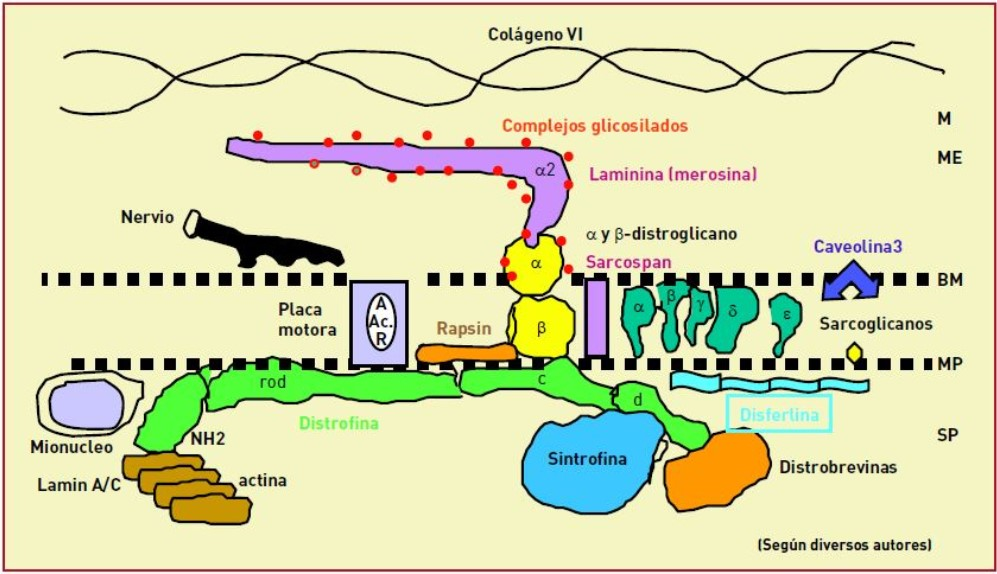
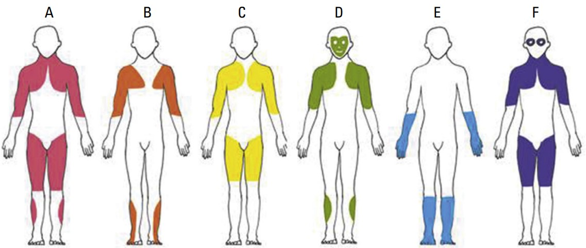

Un análisis integral: fisiopatología, manifestaciones clínicas y estrategias de rehabilitación
Las miodistrofias son un grupo de enfermedades genéticas que afectan el tejido muscular,
comprometiendo su estructura y funcionalidad. Esta página está dirigida tanto al personal médico y de enfermería
del Centro de Medicina del Deporte y Rehabilitación como al público general, con el objetivo de
proporcionar información clara y accesible sobre los tipos más comunes, su fisiopatología,
las características clínicas distintivas y los enfoques terapéuticos actuales en rehabilitación.
¿Qué son las Distrofias Musculares?
Las distrofias musculares son un grupo heterogéneo de enfermedades genéticas que afectan al músculo estriado, especialmente al músculo esquelético. Estas condiciones son causadas por mutaciones en los genes que producen proteínas esenciales para la estabilidad estructural y funcional de las fibras musculares. Estas mutaciones conducen a la reducción, disfunción o ausencia de proteínas necesarias para el funcionamiento adecuado del músculo, lo que causa una degeneración progresiva del tejido muscular. La consecuencia principal de este daño es la debilidad muscular progresiva.
El síntoma más característico de las distrofias musculares es la debilidad muscular, aunque no es el único. A nivel microscópico, se observan necrosis (muerte celular) y fibrosis en las fibras musculares afectadas. A medida que la enfermedad progresa, las fibras musculares son reemplazadas por tejido adiposo (grasa) y se interrumpe la regeneración muscular. Este proceso reduce la capacidad contráctil del músculo, lo que genera debilidad progresiva y, con el tiempo, puede dar lugar a la aparición de contracturas y deformidades ortopédicas.
Las distrofias musculares son enfermedades hereditarias que pueden seguir diferentes patrones de herencia: autosómica dominante, autosómica recesiva o ligada al cromosoma X. Existen más de 50 tipos de distrofias musculares, que se clasifican según el patrón de afectación muscular y la edad de inicio. Algunos de los tipos más conocidos incluyen la distrofia muscular de Duchenne, la distrofia de Emery-Dreifuss y la distrofia facioescapulohumeral. Aunque no existe una cura para estas enfermedades, el diagnóstico temprano y el tratamiento adecuado pueden mejorar la calidad de vida de los pacientes y ralentizar la progresión de los síntomas.
Tipos Más Frecuentes
Distrofia Miotónica: Prevalencia mundial de 0.5–18.1 por 100,000 habitantes. Es la más frecuente en adultos, con una prevalencia elevada en lugares como Guipúzcoa, España (26.53 por 100,000) debido a un posible efecto fundador.
Distrofia Muscular de Facioescapulohumeral (DFEH): Prevalencia mundial de 3.2–4.6 por 100,000 habitantes. Es la segunda más frecuente en adultos después de la distrofia miotónica.
Distrofias Musculares de Cintura (LGMD): Prevalencia mundial de 0.9–2.3 por 100,000 habitantes. Incluye subtipos como la Miopatía de Miyoshi (LGMD2B) y la calpainopatía (LGMD2A), con un aumento en la prevalencia, especialmente en Chile.
Distrofia Muscular de Duchenne (DMD): Prevalencia mundial de 1.7–4.2 por 100,000 habitantes. A pesar de tener una alta incidencia (1 en 3,500 varones nacidos vivos), su prevalencia se reduce debido a la alta mortalidad en los pacientes afectados.
Distrofia Muscular de Becker (DMB): Prevalencia mundial de 0.4–3.6 por 100,000 habitantes. Es más común que otras distrofias musculares, pero su progresión es más lenta en comparación con la DMD.
Distrofia de Emery Dreifuss: Prevalencia mundial de 0.1–0.4 por 100,000 habitantes. Aunque es menos prevalente, es relevante debido a sus complicaciones cardíacas asociadas.
Distrofia Oculofaríngea: Prevalencia mundial de 0.1 por 100,000 habitantes. Es una de las formas más raras, afectando principalmente los músculos de los ojos y la garganta.
Prevalencia de Distrofias Musculares por 100,000 Habitantes
Tipo de Distrofia
Prevalencia (por 100,000 habitantes)
Distrofia Miotónica
0.5 – 18.1
Distrofia Facioescapulohumeral (DFEH)
3.2 – 4.6
Distrofias Musculares de Cintura (LGMD)
0.9 – 2.3
Distrofia Muscular de Duchenne
1.7 – 4.2
Distrofia Muscular de Becker
0.4 – 3.6
Distrofia de Emery Dreifuss
0.1 – 0.4
Distrofia Oculofaríngea
0.1
Fisiopatología General
Las distrofias musculares son un grupo de enfermedades genéticas que resultan de mutaciones en genes específicos. Estas mutaciones afectan las proteínas esenciales para el funcionamiento de las fibras musculares, lo que causa una degeneración progresiva de los músculos. Esto lleva a debilidad muscular y, en algunos casos, a la pérdida total de la función muscular. A continuación, se detalla la fisiopatología de los tipos más comunes de distrofias musculares:

Enfermedad
Estructura Afectada
Gen Implicado
Mecanismo
Distrofia Muscular de Duchenne (DMD)
Membrana plasmática (sarcolema) de las fibras musculares
Distrofina (DMD)
La ausencia de distrofina desestabiliza la membrana de las fibras musculares, lo que provoca la destrucción progresiva de las células musculares durante las contracciones.
Distrofia Muscular de Becker (DMB)
Membrana plasmática (sarcolema) de las fibras musculares
Distrofina (DMD)
La distrofina parcialmente funcional no evita completamente la desestabilización de la membrana sarcolémica, causando debilidad progresiva.
Distrofia Miotónica
Fibras musculares (especialmente las del músculo esquelético)
DMPK (gen para proteína quinasa de la miotonina)
La expansión de repeticiones de tripletas en el gen DMPK produce una proteína defectuosa que interfiere con el funcionamiento normal de los músculos, causando miotonía y debilidad.
Distrofia Muscular de Facioescapulohumeral (DFEH)
Músculos de la cara, escápulas y hombros
DUX4 (gen en el cromosoma 4)
La expresión anormal de DUX4, debido a una deleción parcial en el cromosoma 4, provoca la muerte celular muscular en las áreas afectadas.
Distrofias Musculares de Cintura (LGMD)
Cintura escapular y pelvica
Calpaína-3 (LGMD2A), Disferlina (LGMD2B)
En LGMD2A, la calpaína-3 no puede regular adecuadamente el flujo de calcio, mientras que en LGMD2B, la disferlina no repara correctamente las membranas musculares.
Distrofia de Emery-Dreifuss
Membrana nuclear
Emerina (EMD), Lamina A/C (LMNA)
Las mutaciones en estos genes afectan la estabilidad de la envoltura nuclear, contribuyendo a la debilidad muscular y problemas cardíacos.
Distrofia Oculofaríngea
Músculos de los ojos y la garganta
PABPN1
La mutación en el gen PABPN1 afecta la síntesis de proteínas musculares, causando debilidad en los músculos oculares y de la deglución.
Clínica Característica
Cada tipo de miodistrofia tiene características clínicas específicas, que incluyen:
Patrones de Afectación Muscular
Tipo
Edad de Inicio
Síntomas Comunes
Patrón de Debilidad Muscular
Síntomas Extramusculares
A: Distrofinopatías
Infancia, adolescencia
Dificultad para caminar, caídas frecuentes, debilidad progresiva
Afecta principalmente los músculos proximales de las piernas y la pelvis
Cardiomiopatía, problemas respiratorios
B: Distrofia Muscular de Emery-Dreifuss
Niñez, adolescencia
Debilidad progresiva, contracturas articulares, discapacidad motora
Afecta principalmente los músculos proximales de los brazos, piernas y la parte posterior del cuello
Cardiomiopatía, arritmias
C: Distrofia Muscular de Cinturas
Niñez-adultez
Debilidad muscular en la cintura escapular y pelvica, dificultad para subir escaleras
Afecta los músculos de la cintura escapular y pelvica
Pueden presentarse problemas cardíacos o respiratorios en casos severos
D: Distrofia Facioescapulohumeral
Adolescencia-adultez temprana
Debilidad muscular facial, dificultad para cerrar los ojos y sonreír
Afecta los músculos faciales, escapulares y a veces los músculos de las piernas
Pueden haber problemas auditivos en algunos casos
E: Distrofia Muscular Distal
Adultos
Debilidad progresiva de las extremidades distales (manos y pies)
Afecta principalmente los músculos distales de las extremidades superiores e inferiores
Pueden presentarse problemas cardíacos o respiratorios en casos severos
F: Distrofia Oculofaríngea
Adultos (40-50 años)
Debilidad en los músculos oculares y de la deglución, ptosis
Afecta los músculos faciales, oculares y de la deglución
Disfagia, dificultad para respirar

Fig. 1.2 Patrones de afectación muscular. A: Distrofinopatías; B: Distrofia muscular de Emery-Dreifuss; C: Distrofia muscular de cinturas; D: Distrofia facioescapulohumeral; E: Distrofia muscular distal; F: Distrofia oculofaríngea. Modificada de Mercuri E, et al.
Rehabilitación en Miopatías Distrofias
La rehabilitación en pacientes con miopatías distrofias tiene como objetivo mejorar la calidad de vida, mantener la movilidad, reducir el dolor y prevenir complicaciones. El plan se estructura mediante una combinación de ejercicio terapéutico, termoterapia, electroterapia, láser terapéutico y ultrasonido, adaptado al estado funcional de cada paciente.
Objetivos del Plan de Rehabilitación
Preservación y mejora de la fuerza muscular: Para prevenir la atrofia y mantener la función.
Mejorar la movilidad articular: Reducir la rigidez y mantener el rango de movimiento.
Aliviar el dolor: Disminuir la incomodidad muscular y articular.
Prevenir complicaciones secundarias: Como contracturas musculares, deformidades articulares y pérdida de autonomía.
Optimizar la función respiratoria y cardiovascular: Mejorar la capacidad aeróbica, especialmente en los músculos respiratorios.
Mejorar la calidad de vida: Incrementar la independencia y la capacidad de realizar actividades diarias.
Componentes del Plan de Rehabilitación
1. Ejercicio Terapéutico
El ejercicio terapéutico es fundamental para mantener la fuerza muscular, mejorar la flexibilidad y prevenir la atrofia muscular. Dependiendo de la etapa de la enfermedad, el ejercicio debe ser adaptado a las capacidades del paciente.
Ejercicios de estiramiento: Fomentan la flexibilidad y previenen las contracturas musculares.
Fortalecimiento muscular: Ejercicios con resistencia progresiva para mantener la fuerza en los músculos no debilitados.
Entrenamiento aeróbico: Actividades como caminar o nadar, adaptadas al nivel de capacidad del paciente, para mejorar la resistencia cardiovascular.
Movilización articular: Ejercicios para mantener la movilidad de las articulaciones, especialmente en etapas avanzadas.
2. Termoterapia
La termoterapia utiliza el calor para reducir la rigidez muscular, mejorar la circulación y aliviar el dolor.
Aplicación de calor: Compresas calientes, baños de parafina y terapia con infrarrojos.
Indicaciones: Utilizar en zonas de dolor crónico o contracturas musculares para aliviar la rigidez.
3. Electroterapia
La electroterapia se utiliza para estimular los músculos debilitados, aliviar el dolor y reducir la inflamación.
Estimulación neuromuscular (EMS): Estimula la contracción de músculos débiles, ayudando a mantener su tono.
Estimulación nerviosa eléctrica transcutánea (TENS): Alivia el dolor mediante la estimulación de los nervios periféricos.
Corrientes interferenciales: Utilizadas para tratar dolores más profundos o generalizados.
4. Láser Terapéutico
El láser terapéutico de baja potencia ayuda a reducir la inflamación, mejorar la circulación y promover la regeneración celular.
Aplicación: Utilizado en áreas específicas de dolor, inflamación o cicatrización.
Beneficios: Reduce el dolor y mejora la función de los tejidos dañados.
5. Ultrasonido Terapéutico
El ultrasonido terapéutico utiliza ondas acústicas para penetrar en los tejidos profundos, estimulando la circulación y promoviendo la regeneración muscular.
Aplicación: Utilizado en áreas musculares profundas y para tratar la inflamación.
Beneficios: Alivia el dolor y acelera la curación de los tejidos afectados.
Progresión del Tratamiento
El tratamiento debe adaptarse según la fase de la enfermedad y la evolución del paciente:
Fase 1 (Temprana): Enfoque en el fortalecimiento muscular leve, estiramientos, y ejercicios aeróbicos suaves. Uso de termoterapia y electroterapia para aliviar el dolor.
Fase 2 (Intermedia): Ejercicios de resistencia progresiva, entrenamiento cardiovascular, y técnicas de relajación muscular. Uso de láser y ultrasonido para mejorar la circulación y reducir el dolor.
Fase 3 (Avanzada): Movilización articular, ejercicios de bajo impacto, y fortalecimiento con electroterapia. Continuación con terapia de ultrasonido y láser para manejo del dolor y la regeneración muscular.
Con la implementación adecuada de estas modalidades terapéuticas, se puede mejorar significativamente la calidad de vida de los pacientes con miopatías distrofias, promoviendo su independencia y reduciendo las complicaciones asociadas a la progresión de la enfermedad.